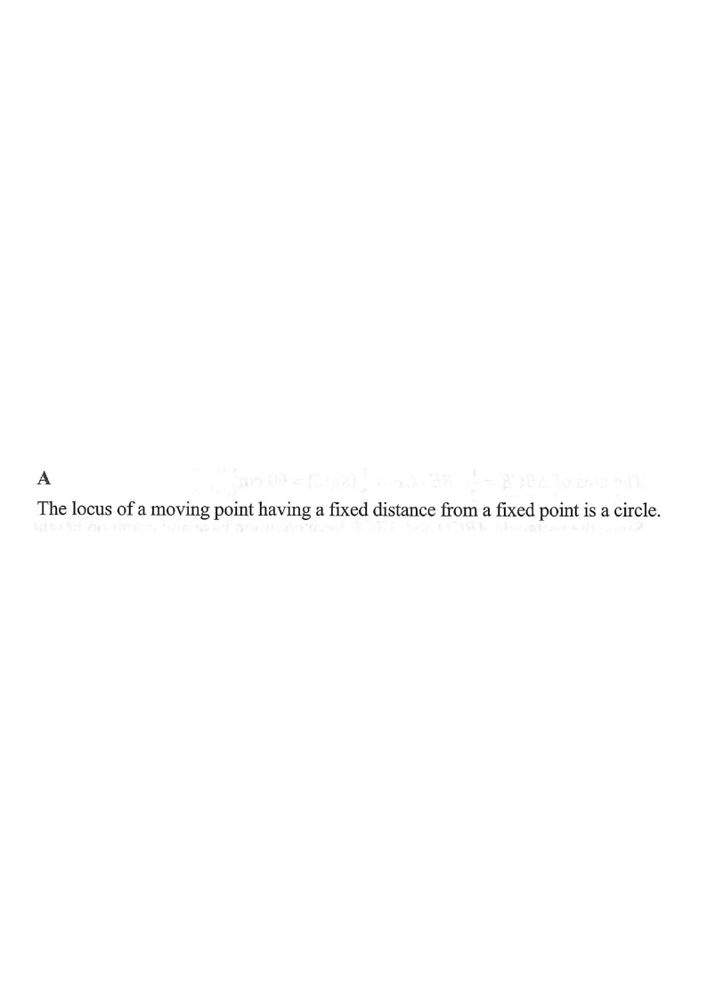

[2020MC#25]
Let $A$ be the point of intersection of the straight lines $9x+4y-7=0$ and $9x-4y+7=0$. If $P$ is a moving point in the rectangular coordinate plane such that the distance between $P$ and $A$ is $8$, then the locus of $P$ is a

Solve the two straight lines simultaneously by the elimination method.
Adding the
two equations eliminates $y$:
$$(9x+4y-7)+(9x-4y+7)=0 \;\Rightarrow\; 18x=0 \;\Rightarrow\; x=0.$$
Substitute $x=0$ back into the first equation:
$$9(0)+4y-7=0 \;\Rightarrow\; 4y=7 \;\Rightarrow\; y=\frac{7}{4}.$$
Therefore the two lines meet at the single point $$A=\left(0,\ \frac{7}{4}\right).$$
Point $P(x,y)$ is a moving point such that the distance from $P$ to the fixed point $A$ is always $8$:
$$AP=8 \quad\text{(a fixed positive distance).}$$
By the distance formula with $A=\left(0,\tfrac74\right)$ and $P(x,y)$:
$$\sqrt{(x-0)^2+\left(y-\tfrac74\right)^2}=8$$
Squaring both sides gives the equation of a circle:
$$x^2+\left(y-\frac{7}{4}\right)^2=64.$$
This is a circle with centre $A\left(0,\tfrac74\right)$ and radius $r=8$.
The locus condition produces one smooth closed curve around $A$:
•
B. triangle — a locus has no corners here. ✗
•
C. quadrilateral — no straight edges. ✗
•
D. regular hexagon — not a polygon. ✗
Only a circle matches "all points at a fixed distance from a fixed point".
Question. \(A\) is the intersection of \(x+2y-6=0\) and \(x-2y+2=0\). A point \(P\) moves so that \(AP=5\). Describe the locus of \(P\) and give its equation.